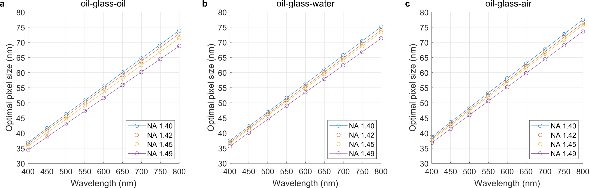

Hardware
This page describes the POLCAM hardware requirements and installation instructions. POLCAM was developed with the intention to keep the experimental setup and requirements simple.
1. Requirements
- Any widefield fluorescence microscope that would normally use a camera for detection (i.e. not a confocal microscope) is in principle compatible with POLCAM. The only physical modification to the microscope would then involve placing a polarisation camera at a camera port.
- Ideally, the microscope has a 60x or 100x magnification objective, although this is not a strict requirement.
- If the polarisation of the excitation laser of the microscope is not sufficiently randomly/circularly polarised at the sample, some modifications might also need to be made to the illumination to avoid biased detection of molecules with certain orientations (due to photoselection). How to find out whether this is necessary and how to implement this is explained in detail in section excitation light and photoselection
2. Buying a polarisation camera
Polarisation cameras are available from different vendors. The polarisation camera used in the POLCAM publication is the Kiralux Polarization Camera CS505MUP (5 MP Monochrome CMOS Sensor, USB 3.0 Interface) from Thorlabs. This model has since been replaced by the newer CS505MUP1, but is functionally identical. At this time, all instructions in this step-by-step guide are specific to the CS505MUP(1) camera, although this might be expanded to other polarisation cameras in the future. We note that (to our knowledge) the CS505MUP and CS505MUPa cameras are the only polarisation cameras that are currently supported in the popular image acquisition software μ-Manager.
A large selection of polarisation cameras from different manufacturers is also available at Edmund optics. We note that all commercially available polarisation cameras use either the IMX250MZR or newer IMX264MZR sensor from Sony. The following table summarises some basic characteristics of a (non-exhaustive) list of commercially available polarisation cameras (last updated on 10-Nov-2022):
| Camera | Sensor | QE | Read noise | Video output | Cost | Manufacturer |
|---|---|---|---|---|---|---|
| CS505MUP1 | IMX264MZR (Sony) | ~72% | <2.5 e- RMS | USB 3.0 | ~£2.2k | Thorlabs |
| GV-5080FA-P-GL | IMX250MZR (Sony) | ~72% | ? | GigE (PoE) | ~£2.6k | IDS Imaging |
| PHX050S1-PC | IMX264MZR (Sony) | ~72% | ? | GigE (PoE) | ~£1.1k | Lucid Vision Labs |
| PL-D755MU-T-POL | IMX250MZR (Sony) | ~72% | ? | USB 3.0 | ~£3.5k | Pixelink |
| Camera | μ-Manager | Python | LabView | MATLAB | VB .NET |
|---|---|---|---|---|---|
| CS505MUP1 | yes | yes | yes | yes | yes |
| GV-5080FA-P-GL | no | yes | ? | ? | ? |
| PHX050S1-PC | no | yes | ? | ? | ? |
| PL-D755MU-T-POL | no | ? | ? | ? | ? |
3. Installing a polarisation camera
Before installing the polarisation camera on a microscope, it is important to calculate the virtual pixel size to make sure that a minimal spatial sampling requirement is met. Otherwise, the output of polarisation camera image processing algorithms will not be accurate.
If you have a 60x oil-immersion objective and a microscope body from the same manufacturer (e.g. Nikon objective with a Nikon microscope body, or Olympus objective with an Olympus microscope body), installing your polarisation camera is very straightforward and you can skip straight to step 3.4. If not, you will have to calculate your optimal pixel size and calculate what additional magnification you need to reach optimal spatial sampling (step 3.1 and step 3.2), buy two lenses and align them (step 3.3) following the instructions in section 3.3.
3.1 Calculating optimal pixel size
The optimal pixel size required for optimal spatial sampling depends on a number of factors: the physical size of the pixels on the polarisation camera (typically 3.45 μm by 3.45 μm), the magnification of the objective, difference in the refractive index between the immersion medium (e.g. oil) and sample medium (e.g. water), and the emission wavelength. The optimal pixel size can be calculated using simulations:
3.2 Calculating experimental pixel size
The experimental pixel size can be calculated using the following formula: $$\text{pixel size (nm)} = 1000 \times \dfrac{\text{physical pixel size camera (μm)}}{\text{total magnification}}$$
For example, in the POLCAM publication, a 60x magnification oil objective (Nikon) was used, and the polarisation camera (CS505MUP, Thorlabs, physical pixel size of 3.45 μm by 3.45 μm) was placed directly at the camera port of a Nikon microscope body. Using the formula above, this combination results in a virtual pixel size of 57.5 nm: $$\text{pixel size (nm)} = 1000 \times \dfrac{3.45 \text{ μm}}{60} = \text{57.5 nm}$$
| Objective | Virtual pixel size (without relay) | Virtual pixel size (with relay) | Wavelength range | Relay needed | Pixel size (with relay) |
|---|---|---|---|---|---|
| 100x | 34.5 nm | 34.5 nm | > 400 nm | no | n.a. |
| 60x | 57.5 nm | 57.5 nm | > 600 nm | no | n.a. |
| 40x | 86.25 nm | ... | ... | yes | ... |
| 20x | 172.5 nm | ... | ... | yes | ... |
| 10x | 345 nm | ... | ... | yes | ... |
Note that some microscope bodies (e.g. Nikon) often have a 1.5x or 2x magnification lens that can be flipped in and out of the imaging path to add an extra magnification factor. If this is flipped in, the total magnification is the magnification of the objective times the additional magnification. E.g., in the case of a 40x magnification objective with a 1.5x magnification lens in, the total magnification will be 60x.
3.4 Mounting the camera
3.4.1 Mounting a camera using a camera port adapter
If you do not need relay lenses (i.e. you are using a 60x magnification objective) and your camera has a camera port adapter, you can simply screw the camera onto the port. An example for a Nikon microscope body is shown below:

4. Image acquisition
Support of different programming languages and third party software will vary between polarisation camera models and vendors, but all should at least come with their own image acquisition software.
Setting up the CS505MUP(1) camera in μ-Manager (Windows only)
The CS505MUP(1) polarisation camera from Thorlabs can be set up in μ-Manager as follows:
- Download ThorCam: Download the latest version of the ThorCam software from the Thorlabs website. Double-click on the .exe file and follow the installation instructions. Restart your PC when the installation is finished if you are prompted to do so.
- Copy some ThorCam files into your μ-Manager installation folder: When the ThorCam installation is finished, find the file Micro-Manager_README.txt in the ThorCam installation folder (usually in C:\Program Files\Thorlabs\Scientific Imaging\Scientific Camera Support\) and follow the instructions in the file. You will have to copy and paste some files.
- Add an "Imaging mode" group to the μ-Manager configuration settings: By default, if you go live in μ-Manager, the camera will be set in "Intensity" imaging mode. There are ... imaging modes: Raw, Intensity, QuadView, Angle and Degree. You will likely always want to image in "Raw" mode. You can add a group to the configuration settings to easily switch between imaging modes. Click the '+' button underneath the configuration settings window and select the checkbox ImageType, give it a group name (e.g. "Imaging mode", or "Image type" or whatever you prefer) and click OK. There should now be a group in the main μ-Manager window that allows you to switch between different imaging modes using a dropdown list.